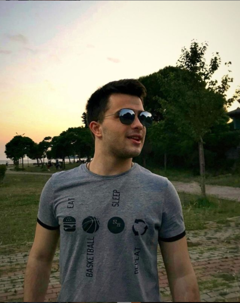

| Toprak Arat | Sude Akyuz | Tugberk Basaran |
 |
 |
 |
We love movies! Webflix was created for people like us who want to watch "Great Movies. Free." Webflix has full-length movies that will make you laugh, make you cry, scare the heck out of you, or inspire you to hug the person you love. We have compelling foreign films, unique original web series, and a place that showcases the brightest film makers of tomorrow. We built Webflix to be the most user friendly movie destination on the web. No movie is more than two clicks away and they are all FREE. We at Webflix want to thank our "lecturer" Aysegul Aktekin for teaches us Web Designing.Webflix founded in 2020 by Tugberk Basaran, Sude Akyuz, Toprak Arat. To keep up with all of the exciting things happening at Webflix, follow us on Facebook, Twitter, or on the Webflix blog.